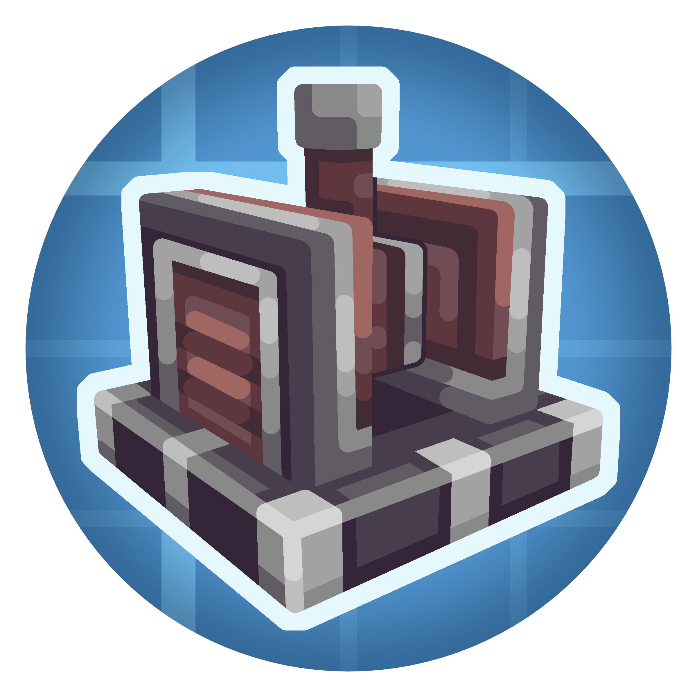

Create Simulated
CreateExpands Create with physics-based interactive contraptions. Typically included in an aeronautics-bundled JAR.
Optional: Just Enough Items
Bundled in: create-aeronautics-bundled-1.21.1-1.3.2.jar

Expands Create with physics-based interactive contraptions. Typically included in an aeronautics-bundled JAR.